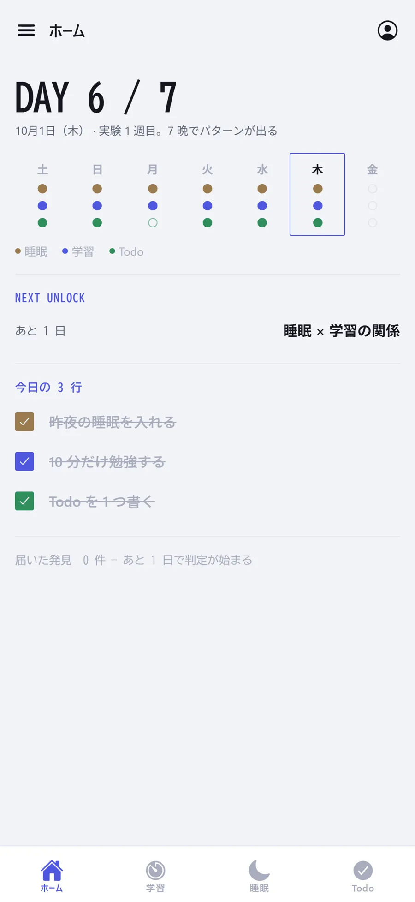
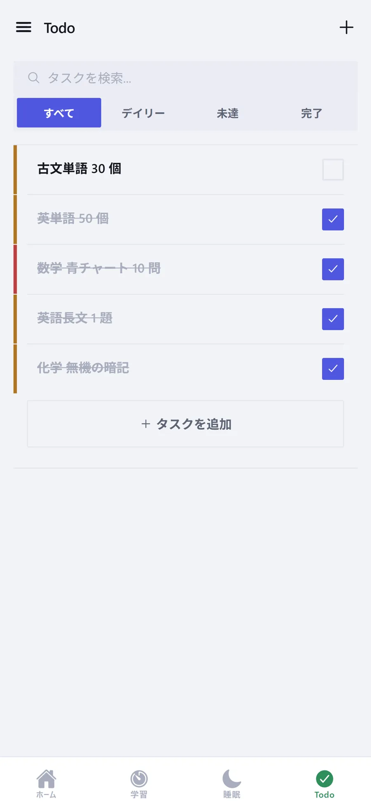
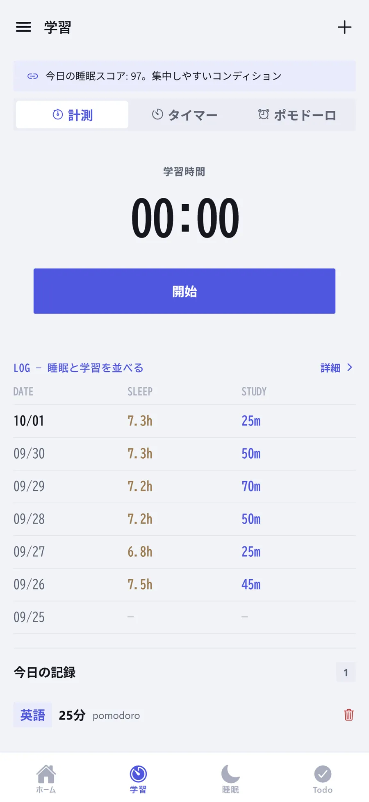
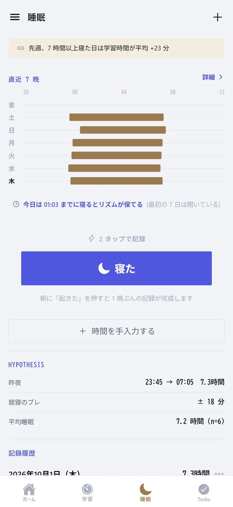

iPhone アプリ
勉強と睡眠とTodo を、
1 つのアプリで記録する
学ぶ人のための生活ログ「GRND」。
睡眠は「寝た」と「起きた」を押すだけ。毎朝、昨日のスコアが 0〜100 で出ます。
iPhone 用。記録は無料です。

iPhone アプリ
学ぶ人のための生活ログ「GRND」。
睡眠は「寝た」と「起きた」を押すだけ。毎朝、昨日のスコアが 0〜100 で出ます。
iPhone 用。記録は無料です。

01
ホームに出るのは、今日やる 3 つと 1 週間の記録です。Todo には期日と通知をつけられます。

02
学習・Todo・睡眠の点に、寝る時刻がそろった分の加点(最大 15 点)がつきます。
点がいちばん低いところから、今日やることが 1 行で出ます。
睡眠がいちばん低い
→ 今夜は 23:30 までに寝る
図はイメージ
03
ストップウォッチ・タイマー・ポモドーロ・手入力。教科ごとに残ります。
昨日何時に寝たかと、今日どれだけ勉強できたかが同じ画面に並びます。

04
目安は、あなた自身の直近の記録から計算します。
睡眠の記録は、夜に「寝た」、朝に「起きた」を押すだけです。

広告は出ません。行動を追跡することもありません。
メール・Google・Apple のどれかで登録すると、端末を替えても記録が残ります。
アカウントとデータは、アプリの中から完全に削除できます。